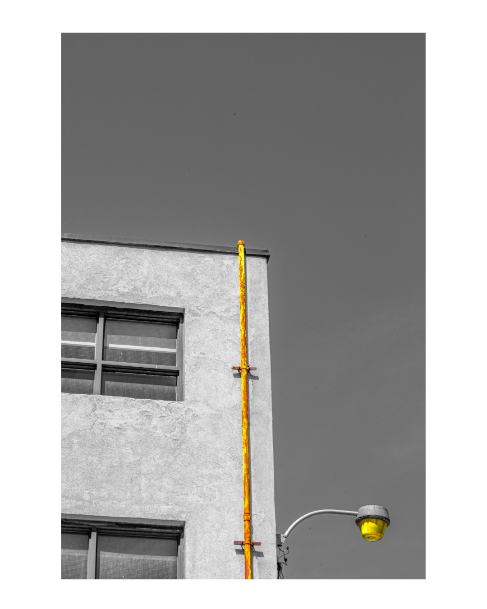
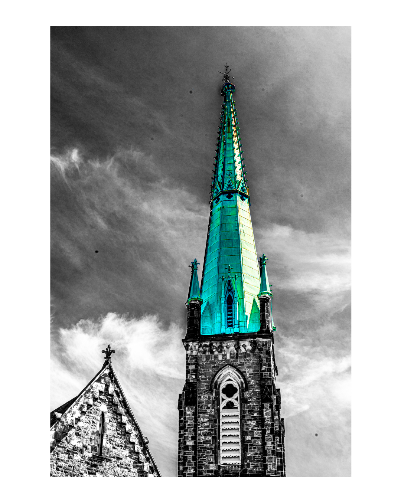
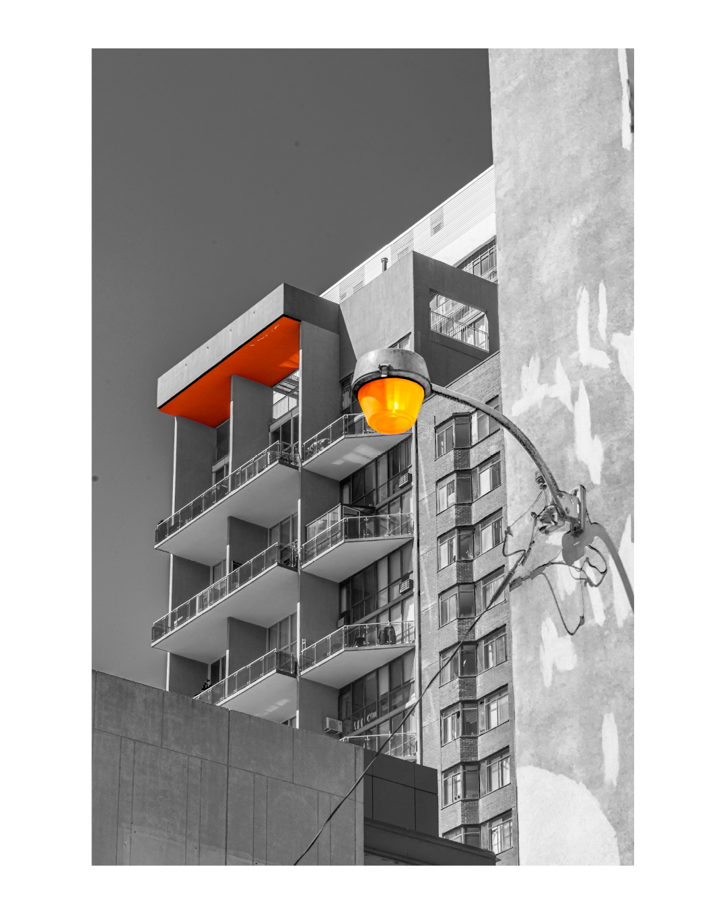
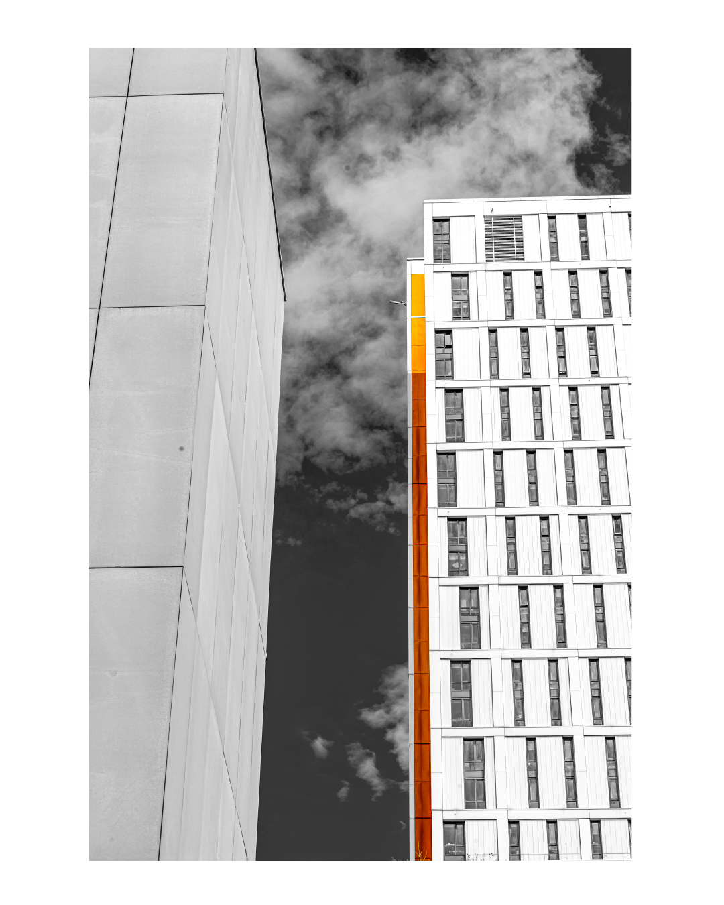
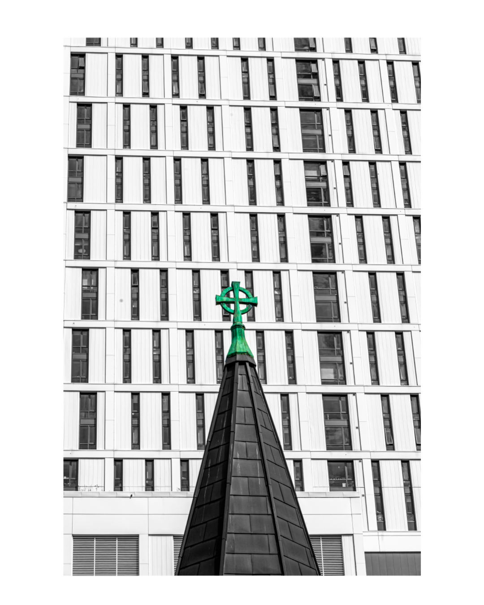
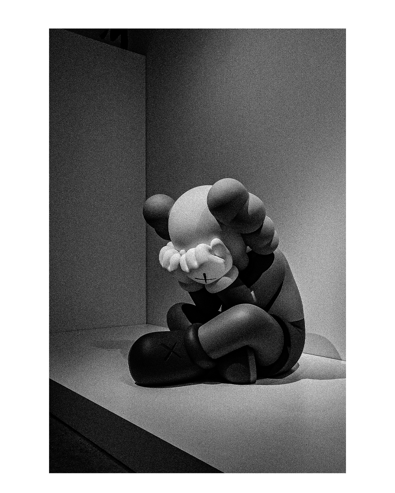
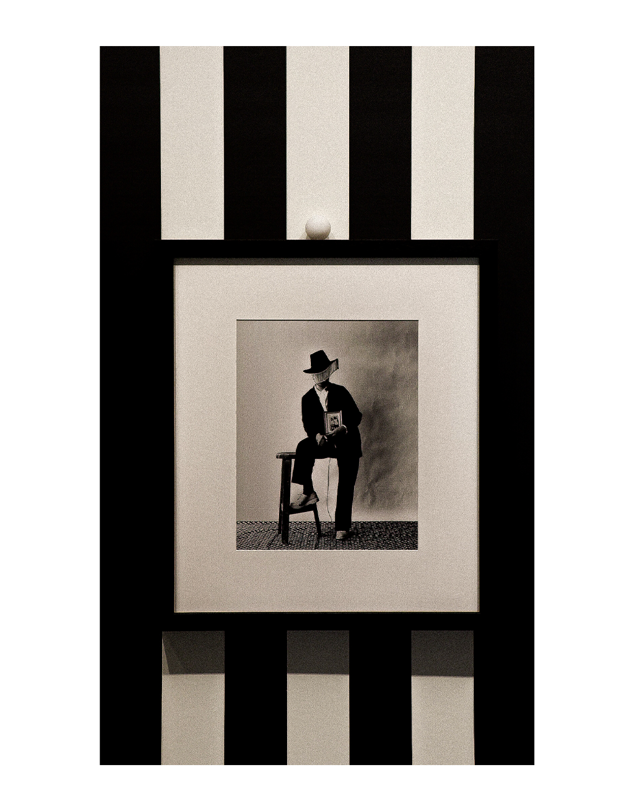
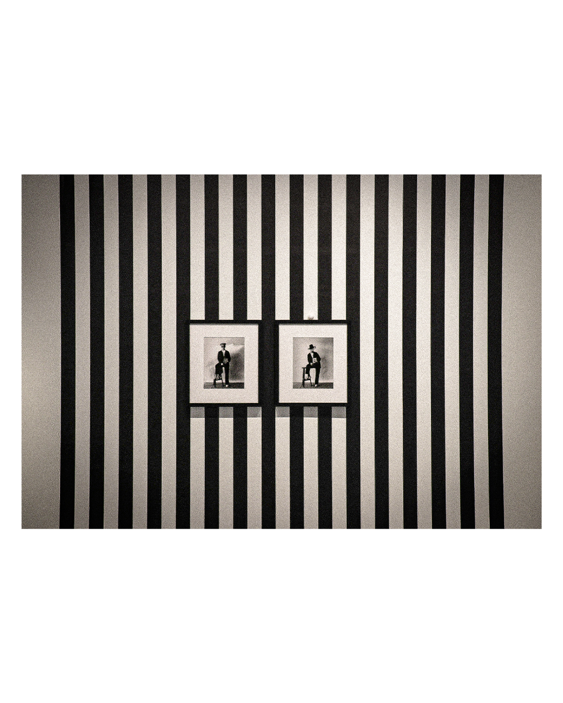
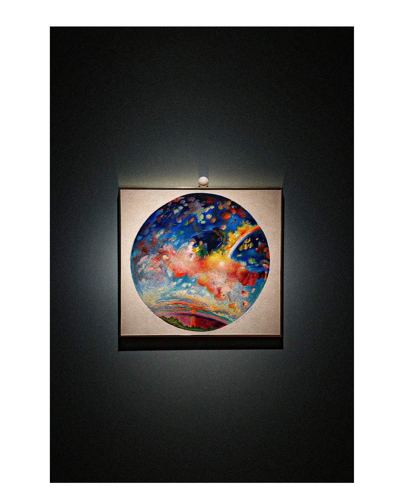
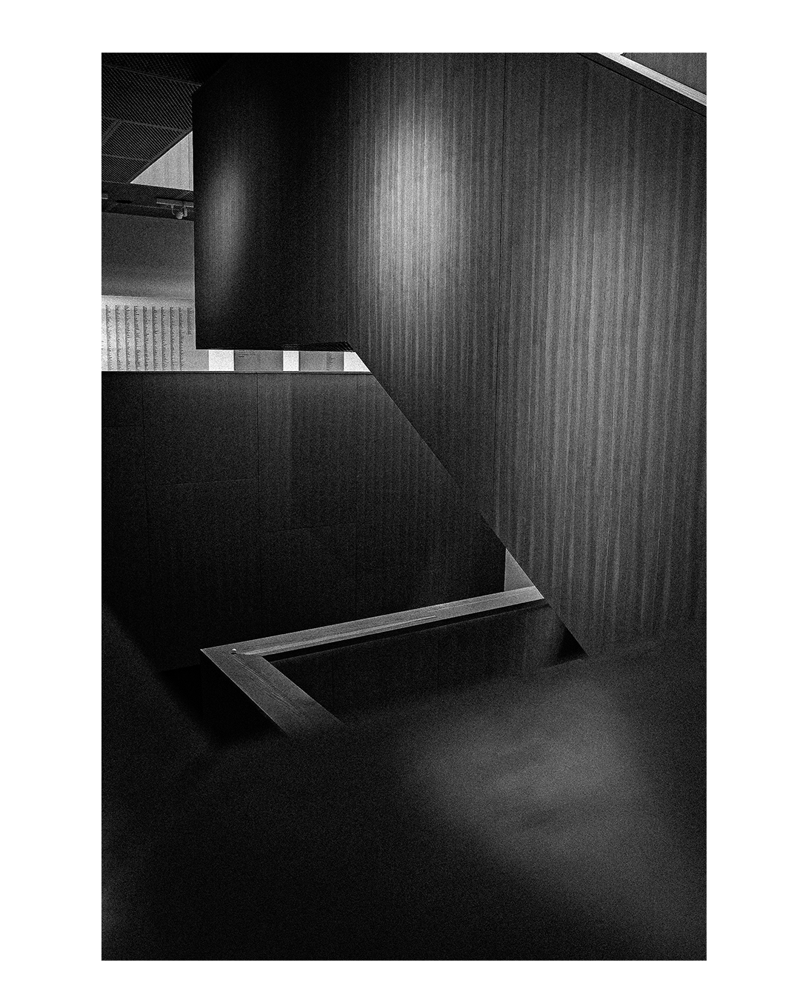

“To create one’s own world takes courage.”
– Georgia O’Keeffe

“Art is the lie that enables us to realize the truth.”
– Pablo Picasso

“The job of the artist is always to deepen the mystery.”
– Francis Bacon

“Simplicity is the ultimate sophistication.”
– Leonardo da Vinci

“Art enables us to find ourselves and lose ourselves at the same time.”
– Thomas Merton

“You don’t take a photograph, you make it.”
– Ansel Adams

“The world always seems brighter when you’ve just made something.”
– Neil Gaiman

“Color is the keyboard, the eyes are the harmonies.”
– Wassily Kandinsky

“Great art picks up where nature ends.”
– Marc Chagall

“The painter tries to master color, but ends up its slave.”
– Goethe